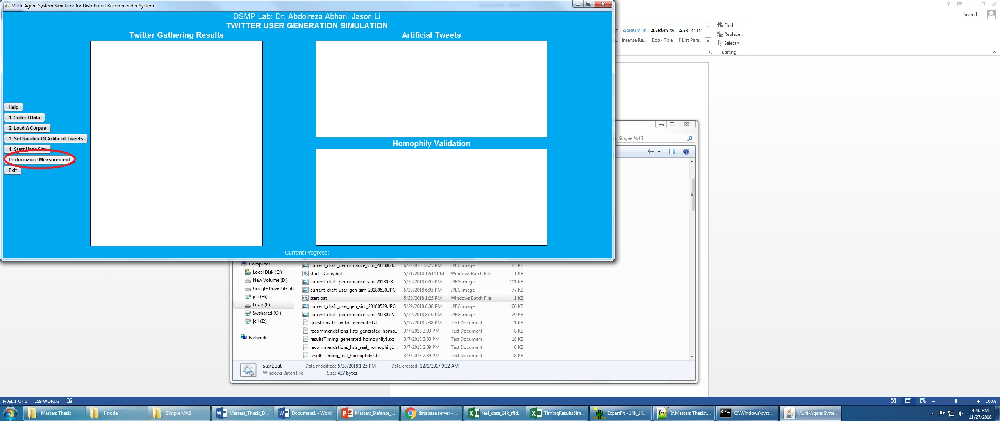
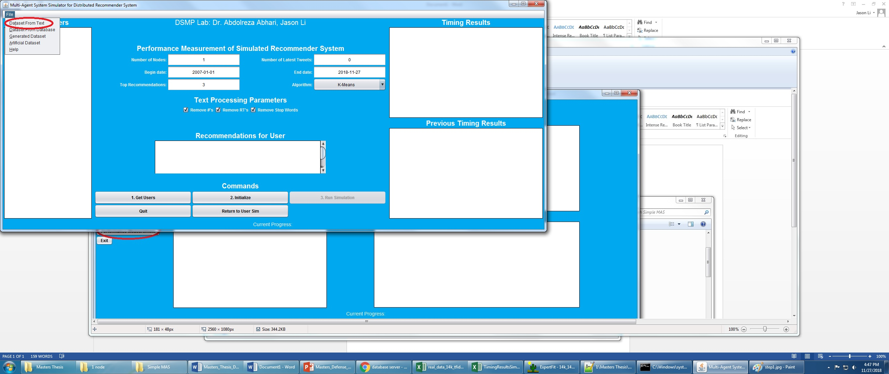
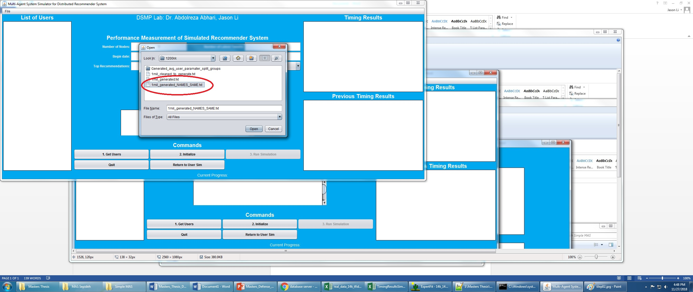
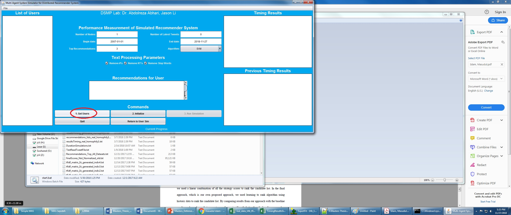
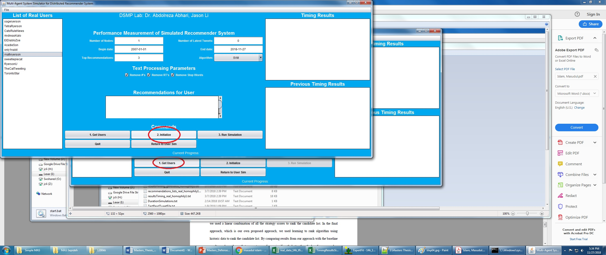
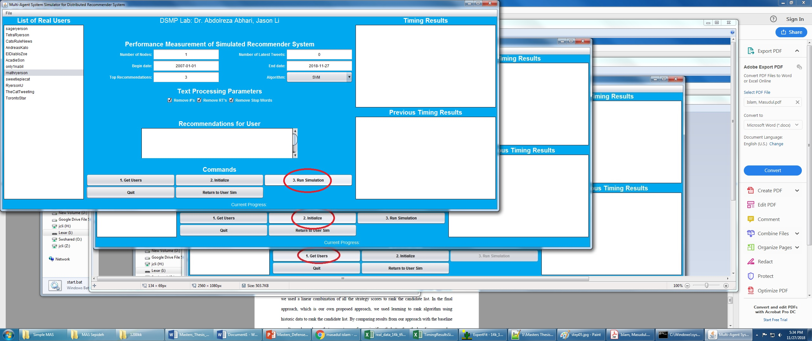
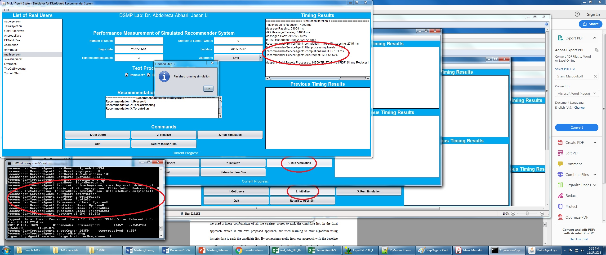

DSMP Social Network Simulator — User Guide (v2.6)
Document version: Final (for testing)
Software: DSMP Social Network Simulator
Branch / release target: v2.6
Repository: https://github.com/aabhari/SocialNetworkSimulatorV3.1
Lab: DSMP Lab, Toronto Metropolitan University
Director: Dr. Abdolreza Abhari
Prepared for: testers and new users (including users with no prior DSMP experience)
1. What this software is
The DSMP Social Network Simulator is a Java multi-agent tool with a simple Swing UI. Researchers use it to:
- Load a social-network style corpus (Twitter, retail, journals, or custom data converted into DSMP format)
- Run recommendation / ML algorithms (Similarity, K-Means, SVM, MLP, Doc2Vec, Common-Neighbors, and others)
- Measure accuracy and timing across one or more processing nodes
The simulator always works on one shared text format: the Twitter follower–followee (DSMP) six-column format. Any new dataset must be converted into that format before Performance Measurement.
2. What is new in v2.6 (read this first)
Compared with earlier builds (including the fixed Neuroph MLP on main / older releases), v2.6 adds the features testers are expected to exercise:
| Area | What changed in v2.6 |
|---|---|
| Dataset Import Lab | New GUI tool to convert raw UCI Online Retail, journals, tweets, or custom files into DSMP six-column text |
| Class balancing | Optional imbalance diagnosis and balancing during import |
| MLP Settings | Configurable hidden layers, neurons, learning rate, max error, max iterations |
| Two MLP engines | Legacy Neuroph MLP (default, same behavior as v2.5) and Sparse Federated MLP (experimental) |
| MLP Auto Search | Automatic hyperparameter search over a loaded DSMP dataset |
| Retail / Sparse MLP fixes | More stable training/evaluation and accuracy reporting for large sparse TF‑IDF cases |
| Startup / import robustness | Safer text import and compile-before-run startup scripts |
If you only need one testing priority from the lab emails: test MLP thoroughly, and make sure anyone can import a new dataset into the common Twitter follower–followee format.
3. Prerequisites
Install and put these tools on your system PATH:
- Git
- Python 3.9 or 3.10 (exactly one of these; other versions are not supported by
build.py) - JDK 8 or higher (
javaandjavac) — JDK 8 preferred - Apache Maven (
mvn)
Quick checks:
git --version
python3.9 --version # or: python3.10 --version / py -3.9 --version
java -version
javac -version
mvn -version
4. Install and start the simulator
Step 4.1 — Get the v2.6 code
git clone https://github.com/aabhari/SocialNetworkSimulatorV3.1.git
cd SocialNetworkSimulatorV3.1
git checkout v2.6
Confirm you are on v2.6:
git branch --show-current
# expect: v2.6
Step 4.2 — First-time setup
Windows:
py -3.9 build.py setup
Linux / macOS:
python3.9 build.py setup
This creates .venv, installs Python packages, downloads Java libraries into lib/, and compiles Java sources into classes/.
Step 4.3 — Run
Windows:
py -3.9 build.py run
Linux / macOS:
python3.9 build.py run
The main window title is similar to:
Multi-Agent System Simulator for Distributed Recommender System
There are two modes:
- Twitter User Generation Simulation (opens first)
- Performance Measurement of Simulated Recommender System (switch using the Performance Measurement button)
5. The DSMP data format (most important concept)
Every Performance Measurement run expects a TAB-delimited .txt file with exactly 6 columns and no header row:
followee<TAB>postId<TAB>yyyy-MM-dd[ HH:mm[:ss]]<TAB>userId<TAB>userName<TAB>text
| Column | Name | Meaning |
|---|---|---|
| 1 | followee / reference user | Class / recommendation target (the account or category being “followed”) |
| 2 | postId | Numeric tweet / invoice / paper id |
| 3 | date | Prefer yyyy-MM-dd; time is optional |
| 4 | userId | Numeric user / customer / author id |
| 5 | userName | Follower / customer / author name (the entity that produced the text) |
| 6 | text | Tweet text, product description, paper title, etc. |
This is the Twitter follower–followee format used throughout DSMP. Retail and journal corpora are rewritten into this same shape so the recommender UI does not change.
Example A — Twitter corpus (Dataset/Reduced_14k.txt)
RyersonU 708526261514141696 2016-03-12 00:33:19 1 AHKru release force strong captainamericacivilwar
RyersonU 708357883197595649 2016-03-11 13:24:14 1 AHKru will watching will loving dannymcbride waltongoggins viceprincipals hbo ew ew
Here AHKru is a follower and RyersonU is the followee.
Example B — Retail already converted (Dataset/Retail.txt)
Sobeys 22153538971 2010-12-15 11:39 12865 FrankWarren ANGEL DECORATION STARS DRESS
Sobeys 37449539330 2010-12-17 9:38 12370 JamieBranch CERAMIC CAKE STAND HANGING CAKES
Here the “followee” is a store/category label (Sobeys, Metro, Loblaws, Wal-Mart) and the “follower” is a customer name. Product descriptions become the tweet text.
Example C — Journals (Dataset/Dataset-Journals-Authors-Titles-August6.txt)
AmericanHeartJournal 4361535 1972-12-31 67609887 OverallJamesC intrauterine virus infections congenital heart disease
Here the journal/venue is the followee and the author is the user.
Ready-to-use common corpora in the repository
Put shared experiment files under the project Dataset/ folder (the lab’s common dataset location). Useful starter files already present:
| File | Typical use |
|---|---|
Dataset/Reduced_14k.txt |
Small Twitter smoke test |
Dataset/Homophily/Homophily_Set_SMALL.txt (if present) / Homophily folders |
Tiny multi-followee demos |
Dataset/Retail.txt |
Pre-converted UCI retail (~20k rows) for MLP/SVM |
Dataset/Reduced_57k.txt, Dataset/Reduced_94k.txt |
Larger Twitter sets |
Dataset/Dataset-Journals-Authors-Titles-August6.txt |
Journal recommendation experiments |
TestedDataset/ and important-stuff/ |
Extra copies / test splits / name–number maps |
If George or others request a large retail file (for example a 100k retail conversion), place the converted DSMP .txt into Dataset/ so everyone uses the same common file.
6. Convert a new dataset into DSMP format (Dataset Import Lab)
This is the section that was missing from earlier notes. Use it whenever you have a new raw dataset (especially UCI Online Retail) that is not already in follower–followee format.
Step 6.1 — Open Dataset Import Lab
- Start the simulator (Section 4).
- On the User Generation screen, click Dataset Import Lab.
Step 6.2 — Choose dataset kind
| Kind | Use when |
|---|---|
| Retail | UCI Online Retail / transaction exports (CSV, Excel, etc.) |
| Journal | Author–title–venue tables |
| Tweets | Twitter-like source files that still need cleaning/mapping |
| Other | Any delimited/workbook file; you map columns yourself |
Step 6.3 — Select the source file and Inspect
- Browse to your raw file (
.csv,.tsv,.xlsx,.xls,.txt, zip workbook, etc.). - Click Inspect.
- Confirm detected delimiter, columns, row counts, and preview look correct.
Supported delimiters are auto-detected: comma, tab, semicolon, pipe.
Step 6.4 — Choose a mapping profile
The mapping decides what becomes the DSMP followee (class label).
| Profile | When to use |
|---|---|
| Similar users / entities | One shared collection label; good for Doc2Vec / Similarity / K-Means |
| Retail: smart product category | Recommended for SVM and MLP retail tests |
| Retail: legacy product family | Older keyword fallback; keep only for compatibility |
| Retail: country baseline | Sanity check using country as followee |
| Retail: stock code experimental | Many product-code classes; can stress classifiers |
| Journal: authors by venue | Journal/venue = followee, title = text |
| Tweets: users by reference account | Reference account = followee, tweet = text |
| Other / custom DSMP mapping | Manually pick followee, user, date, and text columns |
Retail MLP testing recommendation: use Retail: smart product category.
Step 6.5 — Optional balancing
Class imbalance can hurt MLP/SVM accuracy. Import Lab supports:
- Off
- Diagnose only
- Conservative majority cap (recommended first balancing option)
- Strict user-level balance
- Hybrid cap + augmentation
- Weka SpreadSubsample / Resample
For a first test, run Diagnose only, inspect the report, then decide whether to rebuild with a balancing mode.
Step 6.6 — Build the DSMP output
- Set Output directory (typically
Dataset/so the file becomes part of the common dataset folder). - Set Output name (default style ends with a DSMP basename).
- Click Build.
- Review the output preview. Each line must look like the six-column format in Section 5.
The exporter writes:
followee/referenceUser<TAB>numericPostId<TAB>yyyy-MM-dd<TAB>numericUserId<TAB>userName<TAB>text
Step 6.7 — Use the output in the simulator
Click Use Output. The converted file is loaded into Performance Measurement so you can continue with Get Users → Initialize → Run Simulation.
Manual conversion (if you prefer a spreadsheet)
If you do not use Import Lab, create a .txt file yourself:
- Create six columns in this exact order: followee, postId, date, userId, userName, text
- Save as UTF-8 TAB-delimited text
- Remove the header row
- Place the file in
Dataset/ - Load it from File → Dataset From Text
7. Performance Measurement — beginner walkthrough (with figures)
These screenshots come from the project’s classic instruction set. The button layout is the same in v2.6; MLP controls and Dataset Import Lab are additional.
Figure 1 — Switch to Performance Measurement

- On the User Generation screen, click Performance Measurement.
Figure 2 — Open a dataset from text

- In Performance mode, open File → Dataset From Text.
Figure 3 — Choose a corpus file

-
Select a ready DSMP file, for example:
-
Dataset/Reduced_14k.txt(quick Twitter check) Dataset/Retail.txt(MLP retail test)- or your newly imported file from Section 6
Figure 4 — Set parameters, then Get Users

- Set parameters, then click 1. Get Users.
Suggested first-run values:
| Parameter | Beginner value |
|---|---|
| Number of Nodes | 1 |
| Number of Latest Tweets | leave default / reasonable limit |
| Begin date | 2007-01-01 (or earlier than your data) |
| End date | today / after your newest rows |
| Top Recommendations | 3 |
| Algorithm | start with SVM or MLP |
| Text processing | optional Remove # / RT / Stop Words |
For MLP testing: choose MLP in the Algorithm dropdown. The MLP Settings and MLP Auto Search buttons become enabled.
Figure 5 — Initialize

- After users appear in the list, click 2. Initialize.
Figure 6 — Run Simulation

- Click 3. Run Simulation.
Important rules from the built-in Help:
- If you change parameters, click Initialize again before the next run.
- If you load a new file, restart from File → Dataset From Text.
Figure 7 — Read recommendations and timing

-
Inspect:
-
Recommendations for the selected user
- Timing Results / Previous Timing Results
- Accuracy / algorithm messages in the result panels
Results are also written under project folders such as Results/ and dataset-specific result folders.
8. MLP in v2.6 (significantly changed — test this carefully)
8.1 Default behavior (same as old v2.5 Neuroph)
If you select MLP and do not enable custom settings, defaults remain:
| Setting | Default |
|---|---|
| Engine | Legacy Neuroph MLP |
| Hidden layers | 1 |
| Hidden neurons per layer | 10 |
| Learning rate | 0.1 |
| Max error | 0.01 |
| Max iterations | 0 (no cap / unlimited Neuroph iterations) |
This preserves the original Neuroph baseline so older experiments remain comparable.
8.2 MLP Settings dialog
- Algorithm = MLP
- Click MLP Settings
- Check Use custom MLP settings
- Choose engine and parameters
- Click Apply
Engine A — Legacy Neuroph MLP
Use for baseline Neuroph experiments and comparisons with older papers / runs.
Configurable fields:
- Hidden layers (1–8)
- Hidden neurons per layer (1–512)
- Learning rate
- Max error
- Max iterations (
0means uncapped)
Warning for testers: deep Neuroph nets (for example 5 layers) with uncapped iterations can run for many tens of hours on retail/TF‑IDF data. For timed experiments, set a Max iterations value (for example 50–4000) or use Auto Search’s bounded profiles.
Engine B — Sparse Federated MLP (experimental)
Use for large sparse TF‑IDF / retail cases when Neuroph is too slow or unstable.
Configurable fields:
- Hidden layers / neurons / learning rate
- Sparse epochs (default 80)
- Sparse FedAvg rounds (default 16)
- Sparse L2 (default 0.0001)
- Sparse FedProx μ (default 0.0)
Notes:
- Max error is Legacy-only.
- Configurations with 4 or more hidden layers use depth-stable leaky-ReLU training and cap the effective learning rate at 0.03.
8.3 MLP Auto Search (hyperparameter search)
- Algorithm = MLP
- Click MLP Auto Search
- Choose a DSMP dataset file
- Pick a profile
- Run search
- Apply the best settings back into the simulator
| Profile | Intended use |
|---|---|
| Fast bounded search | First tester run / smoke search |
| Balanced staged search | Stronger but still practical search |
| Deep rescue search | Sparse-focused deeper rescue |
| Legacy Neuroph bounded | Neuroph-only search with iteration caps |
| Full research search | Overnight / exhaustive (~28,800 planned runs) — do not use for quick checks |
| Custom | Manual grid |
Ranking uses validation accuracy first. Test accuracy is shown for audit only. Legacy Neuroph candidates are forced to use a max-iteration cap during HPO so searches do not hang forever.
Fast profile grid (default style):
- Layers:
1, 3, 5 - Neurons:
10, 25 - Learning rates:
0.1, 0.03, 0.01 - Legacy max iterations:
50 - Sparse epochs:
80, 160 - FedAvg rounds:
16
8.4 Suggested MLP tester checklist (Maha / Aneela)
- Confirm branch is
v2.6. - Run a short baseline:
- Dataset:
Dataset/Retail.txtorDataset/Reduced_14k.txt - Nodes:
1 - Algorithm: MLP
- Custom settings: off (legacy Neuroph defaults)
- Repeat with custom Neuroph settings, for example:
- 1 layer / 10 neurons / LR 0.1 / max iterations 50
- 3 layers / 10 or 25 neurons / bounded iterations
- Try Sparse Federated MLP on Retail with defaults (80 epochs, 16 FedAvg rounds).
- Run MLP Auto Search → Fast bounded search on the same DSMP file; Apply best; re-run Performance Measurement.
- Optional: import raw UCI Online Retail through Dataset Import Lab using smart product category, save into
Dataset/, then repeat steps 2–5. - Record for each run: dataset name, engine, layers, neurons, LR, iterations/epochs, nodes, accuracy, wall-clock time, and whether the run finished.
8.5 Long-running Neuroph note
Earlier 5-layer Neuroph experiments on original unbalanced UCI retail ran for 47–71+ hours because training is CPU-based and can converge very slowly when uncapped. For testing:
- Prefer bounded max iterations, or
- Prefer Sparse Federated MLP, or
- Prefer Auto Search bounded profiles
GPU cloud (Colab) will not automatically accelerate the current Neuroph path; a faster CPU helps more than a GPU unless the implementation is changed.
9. Quick start recipes
Recipe A — Fast Twitter smoke test (no conversion)
build.py setupthenbuild.py run- Performance Measurement
- File → Dataset From Text →
Dataset/Reduced_14k.txt - Nodes = 1, Algorithm = SVM or MLP
- Get Users → Initialize → Run Simulation
Recipe B — Retail MLP test with pre-converted file
- Performance Measurement
- Load
Dataset/Retail.txt - Algorithm = MLP
- Optional: MLP Settings / MLP Auto Search
- Get Users → Initialize → Run Simulation
Recipe C — New raw UCI Online Retail file
- Open Dataset Import Lab
- Kind = Retail
- Inspect raw CSV/XLSX
- Mapping = Retail: smart product category
- Optional balancing = Diagnose only, then Conservative majority cap if needed
- Build into
Dataset/ - Use Output
- Algorithm = MLP → run Section 8 checklist
Recipe D — Journal dataset
- Import Lab → Kind = Journal → mapping Journal: authors by venue
or loadDataset/Dataset-Journals-Authors-Titles-August6.txt - Get Users → Initialize → Run Simulation
10. User Generation Simulation (optional second mode)
Use this mode when you want to create artificial tweets from an existing corpus.
Built-in Help summary:
- Collect Data from Twitter (followee names comma-separated + follower count), or skip if you already have a correctly formatted corpus. Collected files go under:
Dataset/TwitterObtained/<names>_<timestamp>/*_final.txt - Load A Corpus
- Set Number Of Artificial Tweets (
0= same size as processed corpus) - Start User Sim / Start User Gen
Output appears under:Dataset/TwitterObtained/GENERATED/<ORIGINALFILENAME>_<timestamp>_GENERATED.txt - Evaluate the generated file later in Performance Measurement (Section 7)
11. Algorithms available in Performance mode
| Algorithm | Notes |
|---|---|
| Similarity | Unsupervised similarity baseline |
| K-Means | Clustering recommender |
| SVM | Supervised baseline; good retail/Twitter classifier check |
| MLP | v2.6 focus: Neuroph + Sparse Federated + Auto Search |
| Doc2Vec | Embedding-based path |
| Common-Neighbors | Graph-neighborhood style recommendation |
| K-meansEuclidean | Euclidean variant of K-Means |
12. Multi-node / parallel experiments
- Set Number of Nodes to
2,4, or8(as required by the experiment plan). - Initialize again after changing node count.
- Compare timing and accuracy against the 1-node run.
- For Sparse Federated MLP, FedAvg round models may appear under
Stored_NN/(for example averaged sparse MLP round files).
If a deep MLP accuracy gain is only marginal, the lab may switch to a 3-layer (or other agreed) configuration for multi-node / parallelization experiments.
13. Troubleshooting
| Problem | What to try |
|---|---|
| Wrong Python version | Use only 3.9 or 3.10 with build.py |
java / mvn not found |
Install JDK/Maven and add them to PATH |
| Setup fails | python3.9 build.py info then python3.9 build.py setup -v |
| Dirty rebuild | python3.9 build.py clean then python3.9 build.py setup |
| Get Users finds nobody | File is not TAB 6-column DSMP format, or dates are outside Begin/End |
| Import looks wrong | Re-Inspect; check delimiter and mapping profile |
| MLP buttons disabled | Select Algorithm = MLP first |
| Neuroph never finishes | Set max iterations, use bounded Auto Search, or switch to Sparse Federated |
| New dataset not seen by others | Save the converted DSMP file into the shared Dataset/ folder |
14. Development / repository note (for the team)
For software code changes, the lab is using an incremental / sprint-style process: do not push conflicting simulator code until the group meets and unit-tested change lists are ready. Documentation and other non-functional work (such as this user guide) may be maintained on a separate branch.
Current simulator development uploads for v2.6 / related lines are coordinated through the abhari GitHub repository used by the lab.
15. One-page cheat sheet
1. git clone repo → checkout v2.6
2. python3.9 build.py setup
3. python3.9 build.py run
4. If raw new data: Dataset Import Lab → Build DSMP 6-column file into Dataset/
5. Performance Measurement → File → Dataset From Text
6. Get Users → Initialize → Run Simulation
7. For MLP: use MLP Settings and/or MLP Auto Search (Fast bounded first)
8. Re-Initialize before every new parameter run
Canonical DSMP line:
followee postId yyyy-MM-dd userId userName text
Appendix A — Figure index
| Figure | File | What to do |
|---|---|---|
| 1 | docs/figures/step01.jpg |
Click Performance Measurement |
| 2 | docs/figures/step02.jpg |
File → Dataset From Text |
| 3 | docs/figures/step03.jpg |
Select corpus |
| 4 | docs/figures/step04.jpg |
Set parameters → Get Users |
| 5 | docs/figures/step05.jpg |
Initialize |
| 6 | docs/figures/step06.jpg |
Run Simulation |
| 7 | docs/figures/step07.jpg |
Read recommendations / timing |
Appendix B — Source references used for this guide
- Branch
v2.6of https://github.com/aabhari/SocialNetworkSimulatorV3.1 - In-app Help dialogs in
ControllerAgentGui DatasetImportLabDialog/UciRetailDatasetImporterMlpSettingsDialog/MlpHyperparameterSearchDialog- Project screenshot pack under
Screenshot Instructions-... - Ready corpora under
Dataset/,TestedDataset/,important-stuff/
End of DSMP User Guide v2.6 (final testing version).